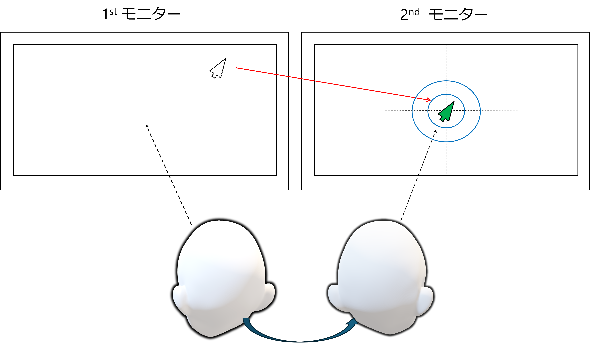

01
研究背景
近年、デジタル化の進展に伴い、デスクワークの増加が続いている。それに伴い、作業の効率化を図るためにマルチモニター環境を 活用するユーザーも増加している。しかし、マルチモニター環境では、マウス操作範囲の拡大による手や腕の負担増加、さらには マウスカーソルを見失う可能性の増大といった課題が生じる。そのため、マルチモニター環境におけるマウス操作のデメリットを 軽減することが必要だと考えた。
02
研究目的
本研究では、マルチモニター環境におけるマウス操作の負担を軽減するユーザーインターフェースを開発することを目的とする。
03
研究手法・システム概要
卒業研究の段階では、提案手法として、頭部動作に着目し、ユーザーインターフェースの開発を行った。具体的な手法としては、 図1のようにユーザーの頭部角度をカメラから取得することで、注視しているモニターを判別し、マウスカーソルを移動させるというものである。 手や腕の負担が軽減したという評価は得られたものの、ユーザーの頭部位置が変わった際に明示的なキャリブレーションが必要になることや モニターの端を注視した際に精度が悪化するなど課題点があった。そこで、モニター遷移直前に現れる一貫した頭部・視線の動きの傾向を ユーザーが注視するモニターを変更する際の癖として定義し、注目した。上記の癖はユーザーの頭部の位置がどこであっても変わらず、癖を把握することで モニターの端を見ているか見ていないか推定できると考えられるからである。したがって、修士研究ではユーザーの飛ぶや視線の情報から、 ユーザー注視モニター対象変更の際の癖を把握することで、精度を向上させるとともに頭部位置の変化にも強い安定したユーザーインターフェースを目指す。

04
実験・評価方法
ここに実験・評価方法を入力してください。どのような条件や観点で研究を確かめるのかを説明します。
05
研究成果・期待される効果
ここに研究成果・期待される効果を入力してください。確認できた結果と今後期待する効果を区別して記載します。
06
今後の展望
ここに今後の展望を入力してください。今後取り組みたい課題や研究の発展の方向を紹介します。